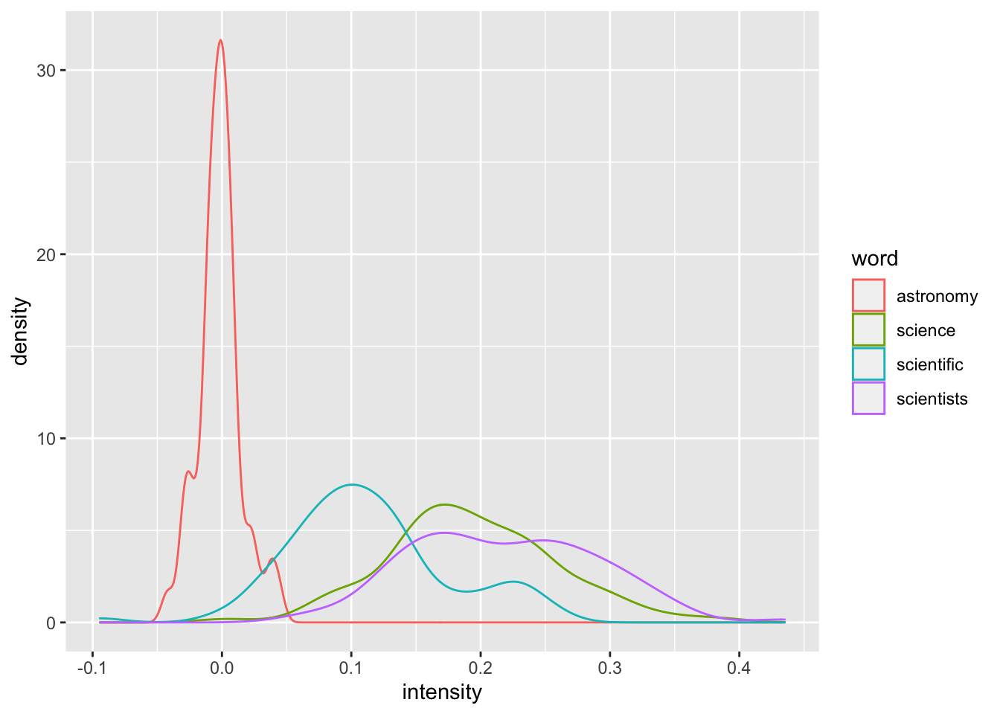
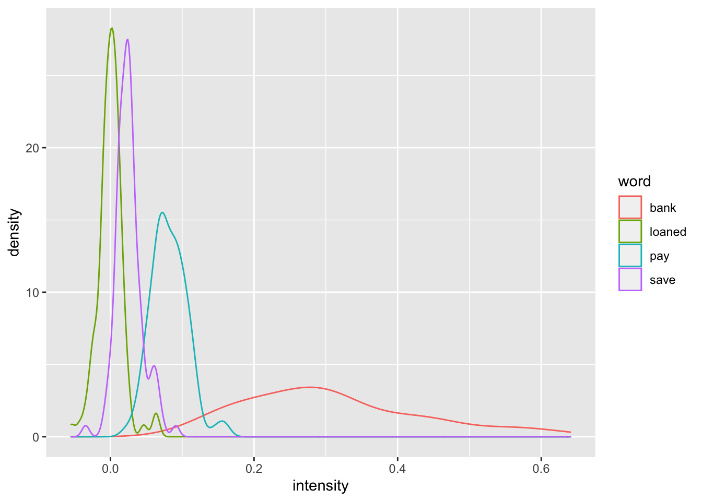

Some evidence of clustering with 2000 sentences, though it’s clear the low frequency words are not as close to the other words in their category.
Echo intensities for words with different frequencies
Due to RAM limitations, I had to reduce the vector length for the word environment vectors to 5000 with sparsity = 4. Also, I am only simulating with 100 subjects.
# No discrepancy encoding: Function to calculate intensity for one participant (modified from Matt's)sim_intensity_once_no_de <-function(strings, dict, vector_length, sparsity, sentence_with_ids, tau =3) { env_vecs <-sl_create_riv(vector_length, length(dict), sparsity) sentence_mem <-matrix(0, ncol =ncol(env_vecs), nrow =length(sentence_with_ids)+4) sentence_mem[1:4, ] <-t(replicate(4, sample(c(-1,0,1), ncol(env_vecs), replace =TRUE))) reordered_sentences <-sample(sentence_with_ids)for(i in1:length(reordered_sentences)){ current_sentence <-colSums(env_vecs[reordered_sentences[[i]], ]) learning_vector <-sample(c(0,1), ncol(env_vecs), replace =TRUE, prob =c(1-l_value, l_value)) sentence_mem[4+i, ] <- current_sentence*learning_vector} reordered_strings <-sample(strings) trial_df <-data.frame(subject =NA, word = reordered_strings, intensity =NA)for (i in1:length(reordered_strings)) { word_id <-which(dict %in% reordered_strings[i]) probe <- env_vecs[word_id, ] intensity <-get_echo(probe, sentence_mem, tau = tau, output ="intensity", type ="cosine") trial_df$intensity[i] <- intensity }return(trial_df)}
science_df <- full_subjects_df %>%filter(word %in%c("astronomy", "scientific", "science", "scientists"))finance_df <- full_subjects_df %>%filter(word %in%c("loaned", "save", "bank", "pay"))ggplot(science_df, aes(x = intensity, color = word, group = word)) +geom_density()

ggplot(finance_df, aes(x = intensity, color = word, group = word)) +geom_density()

Running 100 simulations took slightly more than an hour.
The science cluster graph makes sense (word frequency: astronomy < scientific < science < scientists), although the lack of a difference between tje science and scientists curves is interesting.
The finance cluster graph is somewhat unexpected (word frequency: loaned < save, bank, pay), given that the bank curve is flatter and has a higher intensity than the pay curve.
Word frequencies with MINERVA-AL discrepancy encoding (50 subjects only)
Given the long processing time with the no DE condition, only 50 subjects will be simulated for the DE conditions, as the discrepancy encoding steps add roughly 4 mins per subject to the total duration.
# Setting up prior memory with discrepancy encoding (also applying L value)memory_AL_de <-rbind(prior_memory, matrix(0, ncol =ncol(env_vectors), nrow =length(word_ids)))for(i in1:length(word_ids)){ current_sentence <-colSums(env_vectors[word_ids[[i]], ]) echo <-get_echo(current_sentence, memory_AL_de, tau =3, output ="echo", type ="cosine") echo_norm <- echo/max(abs(echo)) learning_vector <-sample(c(0,1), ncol(env_vectors), replace =TRUE, prob =c(1-l_value, l_value)) memory_AL_de[4+i, ] <- (current_sentence - echo_norm) * learning_vector}# Get echoes (semantic meaning vectors)meaning_AL_de <-subset_semantic_vectors(word_subset, dictionary, env_vectors, memory_AL_de, tau =3)cosine_AL_de <-cosine(t(meaning_AL_de))corrplot::corrplot(cosine_AL_de,method="circle",order="hclust",tl.col="black",tl.cex=.7,title="",cl.cex=.6)
The science cluster is somewhat visible, but the finance cluster is seemingly non-existent.
At least the clusters are still somewhat distinguishable, although this could also be because there are only 2 clusters.
n_of_sim_AL <-50# Use MINERVA-AL discrepancy encoding: Function to calculate intensity for one participant (modified from Matt's)sim_intensity_once_AL_de <-function(strings, dict, vector_length, sparsity, sentence_with_ids, tau =3) { env_vecs <-sl_create_riv(vector_length, length(dict), sparsity) sentence_mem <-matrix(0, ncol =ncol(env_vecs), nrow =length(sentence_with_ids)+4) sentence_mem[1:4, ] <-t(replicate(4, sample(c(-1,0,1), ncol(env_vecs), replace =TRUE))) reordered_sentences <-sample(sentence_with_ids)for(i in1:length(reordered_sentences)){ current_sentence <-colSums(env_vecs[reordered_sentences[[i]], ]) echo <-get_echo(current_sentence, sentence_mem, tau =3, output ="echo", type ="cosine") echo_norm <- echo/max(abs(echo)) learning_vector <-sample(c(0,1), ncol(env_vecs), replace =TRUE, prob =c(1-l_value, l_value)) sentence_mem[4+i, ] <- (current_sentence - echo_norm) *learning_vector} reordered_strings <-sample(strings) trial_df <-data.frame(subject =NA, word = reordered_strings, intensity =NA)for (i in1:length(reordered_strings)) { word_id <-which(dict %in% reordered_strings[i]) probe <- env_vecs[word_id, ] intensity <-get_echo(probe, sentence_mem, tau = tau, output ="intensity", type ="cosine") trial_df$intensity[i] <- intensity }return(trial_df)}full_subjects_df_AL <-data.frame(trial_no =1:(n_of_sim_AL*length(word_subset)), subject =NA, word =NA, intensity =NA) %>%select(-trial_no)for(i in1:n_of_sim_AL){ current_sub <-sim_intensity_once_AL_de(word_subset, dictionary, 5000, 4, word_ids, tau =3) current_sub$subject <- i full_subjects_df_AL[((i -1) *length(word_subset) +1):(i *length(word_subset)), ] <- current_sub}
science_df_AL <- full_subjects_df_AL %>%filter(word %in%c("astronomy", "scientific", "science", "scientists"))finance_df_AL <- full_subjects_df_AL %>%filter(word %in%c("loaned", "save", "bank", "pay"))ggplot(science_df_AL, aes(x = intensity, color = word, group = word)) +geom_density()
ggplot(finance_df_AL, aes(x = intensity, color = word, group = word)) +geom_density()
This took 4 hours! The graphs seem similar to those in the no DE condition. The anomaly of the bank curve having a higher mean and variance than the pay curve is seen here as well.
Word frequencies with Collins et al. (2020) discrepancy encoding
Since this is faster than the MINERVA-AL condition, 100 subjects were simulated.
l_max <-1.0# Setting up prior memory with discrepancy encoding (also applying L value)memory_collins_de <-rbind(prior_memory, matrix(0, ncol =ncol(env_vectors), nrow =length(word_ids)))for(i in1:length(word_ids)){ current_sentence <-colSums(env_vectors[word_ids[[i]], ]) current_intensity <-get_echo(current_sentence, memory_collins_de, tau =3, output ="intensity", type ="cosine") l_collins <- l_max * (1-1/(1+exp(1)^(-12* current_intensity +2))) learning_vector <-sample(c(0,1), ncol(env_vectors), replace =TRUE, prob =c(1-l_collins, l_collins)) memory_collins_de[4+i, ] <- current_sentence * learning_vector}# Get echoes (semantic meaning vectors)meaning_collins_de <-subset_semantic_vectors(word_subset, dictionary, env_vectors, memory_collins_de, tau =3)cosine_collins_de <-cosine(t(meaning_collins_de))corrplot::corrplot(cosine_collins_de,method="circle",order="hclust",tl.col="black",tl.cex=.7,title="",cl.cex=.6)
The science words cluster well and the finance words cluster to a lesser degree.